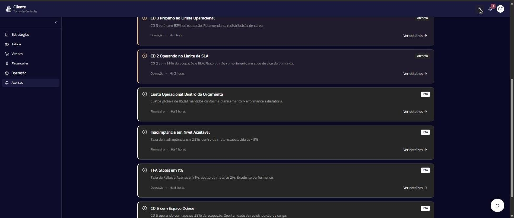

01 · Chronus Performance AI
Torre de Controle: o dado que já chega com a próxima decisão
Monitoramento operacional com IA para C-Level, Diretoria e Gerência. O produto aponta o risco e recomenda a ação.
- Papel
- Product Designer
- Período
- 2024 — 2025
- Situação
- Em produção
- Escala
- 5 centros de distribuição

O problema
O dado era capturado sem um fluxo de consumo definido. O resultado: previsão fraca, retrabalho e decisão tomada no feeling.
Reduzir decisões no feeling e acelerar respostas a desvios.
A solução
Uma torre tem andares, e a informação também. Cada nível responde a uma pergunta diferente: o Estratégico lê a saúde do negócio, o Tático controla a execução e o Operacional acompanha o dia a dia.
A IA embarcada vai além de mostrar o número. Ela sinaliza o risco, como um centro operando no limite de SLA, e recomenda a ação, como redistribuir carga entre os centros.

O processo
- Mapeamento de KPIs de ponta a pontaJornada comercial completa, pontos críticos e oportunidades de medição.
- Modelo SCOREstrutura padrão da indústria, descoberta com especialista em excelência operacional e validada com o diretor de logística.
- Entrevistas in locoCEO e diretores de Operação, TI e Comercial, para entender as dores reais de cada nível.
- KPIs por nívelO que mostrar em cada camada: estratégico, tático e operacional.


O resultado
O produto entrou numa operação de peso: cinco centros de distribuição, mais de 40 mil m² de armazenagem e cerca de 350 empresas atendidas. O C-level passou a ler a saúde do negócio, a diretoria ganhou controle da execução e a operação trocou a decisão no feeling por dado confiável.
O MVP virou produto e hoje está em produção no cliente.